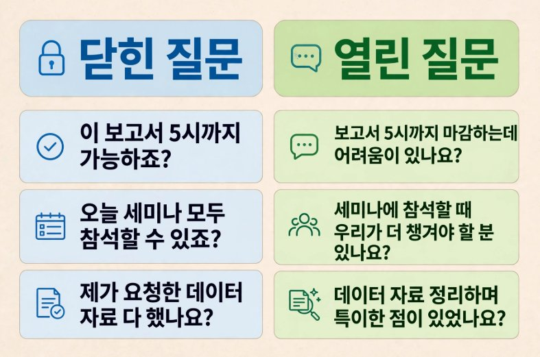
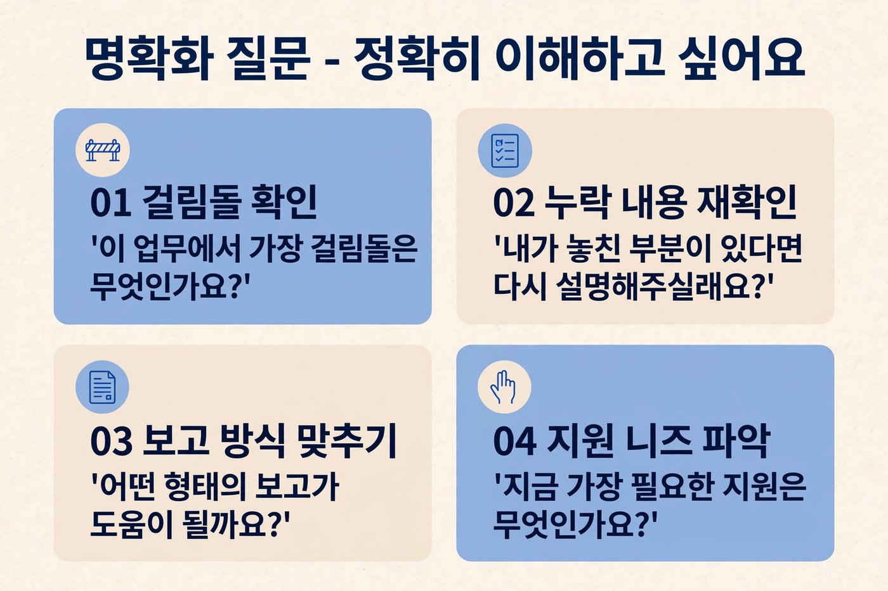
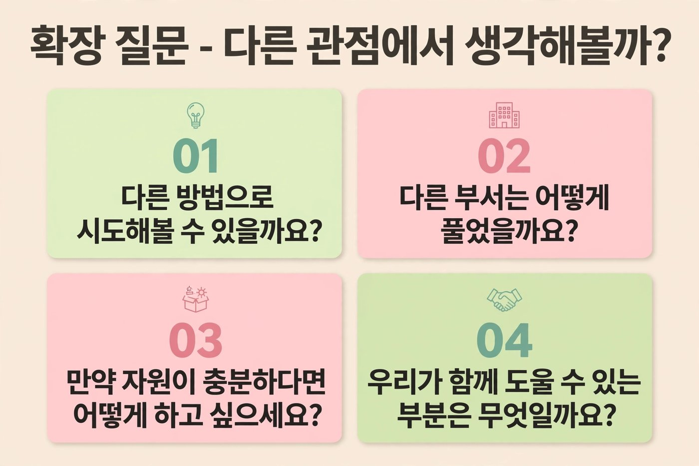

AI가 일을 하는 시대, 사람에게 가장 필요한 능력은 ‘양질의 질문’입니다. 넓게 생각해야 좋은 질문이 나오고, 좋은 질문이 좋은 답을 부릅니다.
개
닫힌 질문 vs 열린 질문CONCEPT

닫힌 질문
열린 질문
“예 / 아니오”로 끝난다
생각과 상황이 나온다
확인 · 점검 · 추궁처럼 들린다
관심 · 지원처럼 들린다
대화가 끝난다 (“아니요… 죄송합니다”)
대화가 이어진다 (“이 부분이 어려워요”)
“했어요? 안 했어요?”
“하시면서 어떤 점을 발견하셨어요?”
교관의 목소리 · 녹음 45:28 ~ 48:02
“‘다 했나요, 안 했나요?’가 아니라 — 그분은 이미 열심히 공부하면서 시간을 맞추려고 애쓰고 계십니다. ‘하시면서 발견한 점이 있나요? 제가 다시 알아봐야 할 부분이 있나요?’ 이렇게 물어보면 굉장히 다른 답으로 연결됩니다.”
성장 질문의 3단계
1 · 열린 질문
마음을 연다
“어떤 어려움이 있으세요?” “우리가 누구를 더 챙기면 좋을까요?”
2 · 명확화 질문
정확히 이해한다
“제가 이해한 게 맞나요?” “가장 걸림돌이 되는 부분은요?”
3 · 확장 질문
생각을 넓힌다
“다른 방법은 없을까요?” “다른 부서는 어떻게 풀었을까요?”
“사람의 마음에 있는 모략은 깊은 물 같으니라 그럴지라도 명철한 사람은 그것을 길어 내느니라”
잠언 20:5 — 질문은 구역장의 마음 깊은 곳에 있는 생각을 길어 올리는 두레박입니다.
13
PART 4 · 성장 질문도구 · 명확화 질문 · 확장 질문
도
질문 카드 두 가지TOOL

명확화 질문 — 정확히 이해하고 싶어요

확장 질문 — 다른 관점에서 생각해 볼까?
왜 명확화 질문이 필요할까? 정책이 내려오면 “네, 알겠습니다” 하고 돌아서서 “그래서 뭘 하라는 거지?” 한 적이 있지요. 바로 묻지 못하는 이유는 눈치가 보여서, 나만 이해 못한 것 같아서입니다. 리더가 먼저 “어떤 부분이 이해가 안 되세요? 엑셀 양식을 만들어 드릴까요?”라고 물어 주면, 답을 함께 만들어 갈 수 있습니다.
개
이야기로 기억하기 · 부산 시장과 전주 시장STORY
전주 시장이 부산 시장에게 말했습니다. “바다도 넓고 해양 자원이 많으니 정말 부럽습니다.”
부산 시장은 웃으며 질문으로 답했습니다. “그럼 바다를 만드시면 되지요.”
“내륙인 전주에 바다를 어떻게 만듭니까? 재정도 인력도…” 하자, 다시 물었습니다. “바다가… 꼭 그 바다만 있습니까?”
돌아온 전주 시장은 고민 끝에 ‘책의 바다’를 만들기로 합니다. 생각은 책에서 나오니까요. 지금 전주는 인구 대비 도서관이 가장 많은 도시 중 하나가 되었습니다. 확장 질문 하나가 한 도시의 정책을 바꾼 것입니다.
교관의 목소리 · 녹음 49:46 ~ 53:57
“부산 시장님은 계속 무슨 질문을 하신 거예요? 확장 질문입니다. 바다를 만드세요. 그 바다만 있는 게 아니에요. 우리도 만들면 돼요.”
▶ 구역장 모임에서 이 구간을 함께 듣고 “우리에게 ‘바다’는 무엇일까요?”라고 물어보세요.
비
우리 지역이 부러워만 하던 ‘바다’는?VISION
다른 지역(교회)을 보며 부러웠던 것
우리 방식으로 ‘만든다면’ 무엇을 만들까?
14
PART 4 · 성장 질문실습 · 질문 바꾸기
실
닫힌 질문을 성장 질문으로 바꿔 보세요PRACTICE
첫 줄은 예시입니다. 내가 이번 주 실제로 했던 질문을 떠올리며 바꿔 보세요.
닫힌 질문 (자주 하는 말)
성장 질문으로 바꾸기
유형
이번 주 보고서 다 했어요?
보고서 정리하면서 어려운 점이나 특이한 점이 있었나요?
열린
이번 주 예배에 구역원 다 나오죠?
섭외자 있어요, 없어요?
공지한 거 이해하셨죠?
왜 목표를 못 채웠어요?
결석자 심방 다녀오셨어요?
이 방법밖에 없는 거죠?
실
나만의 질문 3개 만들기MY QUESTIONS
열린 질문
마음과 상황을 여는 질문
명확화 질문
정확히 이해하고 지원할 것을 찾는 질문
확장 질문
다른 방법 · 다른 관점을 여는 질문
질문할 때 기억할 3가지
“왜 못 했어요?”는 질문이 아니라 추궁입니다. “무엇이 걸림돌이었나요?”로 바꾸면 원인이 나옵니다.
질문 뒤에는 침묵을 견디세요. 5초만 기다리면 진짜 답이 나옵니다.
답을 듣고 나면 “제가 도울 부분은요?”로 마무리하세요. 질문은 지원으로 끝날 때 신뢰가 됩니다.
15
PART 4 · 성장 질문현장에서 활용하기 · 상황별 질문 카드
현
구역장에게 바로 쓰는 상황별 질문 카드FIELD GUIDE
오려서 수첩에 붙이거나, 사진으로 찍어 휴대폰 배경화면으로 써 보세요.
월요일주간 점검을 시작할 때
이번 주 가장 먼저 챙기고 싶은 분은 누구세요?
지난주에 잘된 것 하나만 꼽는다면요?
이번 주 제가 도와드릴 일 한 가지는요?
결석·낙심구역원이 흔들릴 때
그분이 요즘 마음 쓰고 있는 일은 뭘까요?
그분이 예전에 기뻐했던 순간은 언제였나요?
누가 가면 그분이 가장 편할까요?
실적 저조숫자가 안 나올 때
목표까지 가는 길에서 가장 막힌 곳은 어디예요?
잘되고 있는 구역은 무엇이 다를까요?
한 가지만 바꿔 본다면 무엇을 바꿀까요?
정책 전달새 지침을 내려보낼 때
이 지침에서 가장 이해가 안 되는 부분은요?
우리 구역에 적용하면 어떤 어려움이 예상되세요?
어떤 양식이나 자료가 있으면 편하실까요?
지친 구역장배터리가 꺼져 갈 때
요즘 사명하시면서 가장 힘든 순간은 언제세요?
지금 내려놓아도 되는 일이 있다면요?
최근 스스로 ‘잘했다’ 싶은 순간은요?
회의 마무리모두의 생각을 모을 때
아직 말씀 안 하신 분 생각도 듣고 싶어요.
오늘 결정한 것 중 가장 걱정되는 건 뭘까요?
다음 모임까지 각자 할 한 가지는요?
🚀 이번 주 질문 미션
구역장 3명에게 위 카드 중 하나로 질문하고, 들은 답을 한 줄씩 적는다.
구역장 회의에서 “했어요?”를 한 번도 쓰지 않는다.
내 질문에 구역장이 가장 길게 대답한 질문을 찾아 동료 리더와 나눈다.
16
PART 5 · 리더십 레벨업 ②
경청과 소통
경청은 듣는 것에서 끝나지 않습니다. 듣고, 이해하고, 공감하는 것 — 그래야 의미와 의도가 전달됩니다.
개
심리적 안전감PSYCHOLOGICAL SAFETY
팀에서 실수를 해도 비난받지 않고, 질문해도 무시당하지 않으며, 반대 의견을 내도 불이익이 없다는 믿음. 최근 기업에서 성과를 올리는 데 가장 중요한 조직문화 중 하나로 여겨집니다.
— 출처: 구글 연구(프로젝트 아리스토텔레스), 하버드 비즈니스 스쿨 에이미 에드먼슨 교수 연구
신뢰 ○ · 경직 ✕
바쁜 리더는 문제를 들어도 잘 들리지 않습니다. 눈앞의 숫자에 집중하기 때문입니다. 해석이 다르면 불신과 오해가 생깁니다. 의미와 의도를 파악하는 것이 경청입니다.
💡 구글 ‘프로젝트 옥시전’
구글은 2008년부터 좋은 관리자의 조건을 연구했습니다. 결론은 “성과와 함께 구성원을 성장시키는 관리자”. 산소처럼 조직에 꼭 필요한 리더입니다. (1회차 퀴즈 정답!)
두 가지 그림으로 기억하기
거리
멀리서 대화하면, 그 틈으로 성도가 빠져나갑니다
팔을 뻗은 거리에서 대화해 보세요. 간격이 생깁니다. 아주 중요한 이야기를 할 때 우리는 가까이 다가갑니다. 가까울수록 지킬 수 있습니다.
그릇
깨진 그릇은 메우지 말고, 새로 빚습니다
우리 부서는 사람을 담는 그릇입니다. 들어오는 사람도 많지만 나가는 사람도 많다면 어딘가 깨진 것입니다. 지금까지의 방식을 깨고, 새 그릇을 빚는 방법 — 그것이 경청과 소통입니다.
교관의 목소리 · 녹음 53:57 ~ 56:56 / 61:37 ~ 63:10
“여러분이 도공이라면 깨진 그릇을 쓰시겠습니까? 사고의 패러다임을 깨야 합니다. 그리고 새로운 모양의 그릇을 빚어 가면 어떨까요? 그 방법이 경청과 소통입니다.”
“내 사랑하는 형제들아 너희가 알거니와 사람마다 듣기는 속히 하고 말하기는 더디 하며 성내기도 더디 하라”
야고보서 1:19
17
PART 5 · 경청과 소통도구 · 재진술
도
재진술 — 상대의 말을 그대로 돌려주기TOOL
재진술이란 상대가 한 말을 그대로(또는 핵심만) 반복해 주는 것입니다. 내 해석과 감정을 더하기 전에, “나는 당신의 말을 이렇게 들었어요”를 먼저 보여 주는 기술입니다.
재진술 없이
아내가 콩나물을 사 왔습니다. 남편: “집에 콩나물 있는데 또 샀어? 살림을 이렇게…” 아내: “당신이 언제 냉장고 채우는 거 도와준 적 있어?” → 몇백 원짜리 콩나물로 싸움이 붙습니다.
재진술로
남편: “집에 콩나물 있는데 또 샀네.” 아내: “그러게, 집에 콩나물이 있는데 또 사 왔네.” → 상대의 말을 받아 주는 순간, 다툼이 대화로 바뀝니다.
사명 현장에서의 재진술
구역장: “회의를 이렇게 길게 하면 언제 심방하고 언제 전도해요?”
✕ “길어질 수도 있죠, 순종하셔야죠.”
○ “회의가 길어지면 심방하고 전도할 시간이 부족하다는 말씀이시죠?” → 상대는 ‘내 말이 들렸다’고 느끼고, 함께 해결책을 찾을 수 있습니다.
교관의 목소리 · 녹음 56:59 ~ 58:34
“재진술이란, 남이 한 말을 그대로 반복하는 거예요. ‘그니까 길어질 수도 있지, 순종하셔야죠’가 아니라는 거죠.”
▶ 재진술 실천 피드백은 다음 회차에서 나눕니다. 이번 달에 써 본 장면을 기록해 오세요.
실
재진술 연습PRACTICE
구역장의 말
나의 재진술
“요즘 구역원들이 연락을 잘 안 받아서 너무 지쳐요.”
“보고서 양식이 자꾸 바뀌어서 헷갈려요.”
“저도 열심히 하는데 숫자로만 평가받는 것 같아요.”
(이번 주 실제로 들은 말)
✍ 재진술 3단계 — ① 상대의 말을 그대로 받기 → ② “~라는 말씀이시죠?”로 확인 → ③ “그래서 마음이 어떠셨어요?”로 감정까지 듣기
18
PART 5 · 경청과 소통도구 · 원온원(1on1)
도
원온원(1on1) — 성장과 신뢰를 위한 정기 대화TOOL
원온원은 리더와 구성원이 성장과 신뢰를 위해 정기적으로 나누는 1:1 대화입니다. 대기업이 수십 년간 활용해 온 커뮤니케이션 도구로, 꾸준히 원온원을 한 조직에서 성과가 계속 잘 나온 사례가 많습니다.
우리가 익숙한 심방
목적이 정해져 있다 — 신앙적으로 문제는 없는지, 잘 나올지, 섭외자가 있는지 확인하러 간다.
원온원
그 이전에, 이 사람을 성장시키고 이 사람과의 신뢰를 쌓는 것이 목적이다. 확인이 아니라 관심이다.
원온원 질문 카드
🌱 마음 열기
요즘 재미있게 보고 있는 분야가 있나요?
요즘 관심 있는 것은 무엇인가요?
요즘 가장 감사했던 일은요?
🔥 사명 나누기
사명을 하실 때 어떤 부분이 어려우신가요?
최근 한 달간 스스로 ‘잘했다’고 느낀 순간은?
어떤 가치를 중요하게 생각하며 사명하세요?
현
원온원 5원칙FIELD GUIDE
듣기만 합니다. 절대 조언하지 않습니다. 해결하려는 순간 대화는 보고가 됩니다.
공감하고 이해합니다. “그렇구나, 이런 데 관심이 있으시구나, 이런 철학을 가지고 계시구나.”
카드를 다 쓰지 않아도 됩니다. 한두 가지 질문이면 충분합니다.
숫자 이야기는 하지 않습니다. 원온원 시간만큼은 실적 점검을 내려놓습니다.
정기적으로 합니다. 한 번의 감동보다 매달 15분의 꾸준함이 신뢰를 만듭니다.
교관의 목소리 · 녹음 58:34 ~ 61:33 · 1회차 숙제
“한 달 후에 오실 때, 이 원온원을 적어도 두 분과 함께 대화를 나누고 오시면 되겠습니다. 듣는 것만 합니다. 절대 조언하면 안 됩니다. 공감하고 이해하는 시간을 가지시면 됩니다.”
“네 양떼의 형편을 부지런히 살피며 네 소떼에 마음을 두라”
잠언 27:23
19
PART 5 · 경청과 소통실습 · 원온원 기록지 (숙제)
실
원온원 기록지 — 2회차 전까지 2명HOMEWORK
🗓 원온원 #1
대상 · 날짜 · 장소
내가 한 질문
들은 이야기 (핵심)
내가 한 재진술 · 공감
새롭게 알게 된 점
상대의 표정 · 반응
🗓 원온원 #2
대상 · 날짜 · 장소
내가 한 질문
들은 이야기 (핵심)
내가 한 재진술 · 공감
새롭게 알게 된 점
상대의 표정 · 반응
🔁 나를 돌아보기 — 조언하고 싶은 순간이 몇 번 있었나요? ( 번) · 참았을 때 상대는 무엇을 더 이야기했나요? 2회차에서 나눕니다.
20
PART 6 · 리더십 레벨업 ③
구조를 설계하는 리더
좋은 구조에서 좋은 행동이 나옵니다. “의견 주세요”라고 말하는 리더가 아니라, 의견이 나올 수밖에 없는 구조를 만드는 리더.
개
왜 ‘의견 주세요’에 아무도 말하지 않을까?CONCEPT
지시와 전달을 다 마친 뒤 “의견 주세요, 건의하세요”라고 하면 구역장님들이 의견을 잘 내나요? 안 냅니다. 사람이 문제가 아니라 의견을 낼 수 없는 구조가 문제입니다.
1회차 교육을 떠올려 보세요. 체크리스트로 진단하고, 포스트잇에 먼저 적고, 한 사람도 빠짐없이 말했습니다. 그 결과 앉아 있는 모든 사람의 의견이 다 나왔습니다. 그것이 구조의 힘입니다.
구조 설계
효율적인 도구 활용
포스트잇 · 피쉬본 · PMI · 5Whys
좋은 구조 ⇒ 좋은 행동
신뢰와 협업 상승
모두가 말하는 경험이 쌓이면 자발성이 자랍니다
성장하는 조직문화
체계적인 성장 구조
한 사람의 열정이 아닌 시스템으로
정신교육이 1순위입니다. 성과를 내기 위해 정신교육과 동기부여가 가장 중요합니다. 다만 목표 성과를 이루기 위해 다양한 의견을 경청하고 반영하여 함께 성장하는 조직문화를 만드는 것 — 그 그릇이 구조입니다.
“너와 너와 함께한 이 백성이 필연 기력이 쇠하리니 이 일이 네게 너무 중함이라 네가 혼자 할 수 없으리라”
출애굽기 18:18 — 이드로의 조언으로 모세는 천부장·백부장·오십부장·십부장의 구조를 세웠습니다. ‘일하는 사람만 일하는 구조’는 성경적으로도 오래 갈 수 없습니다.